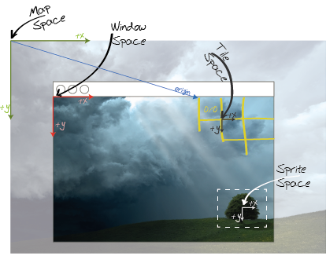
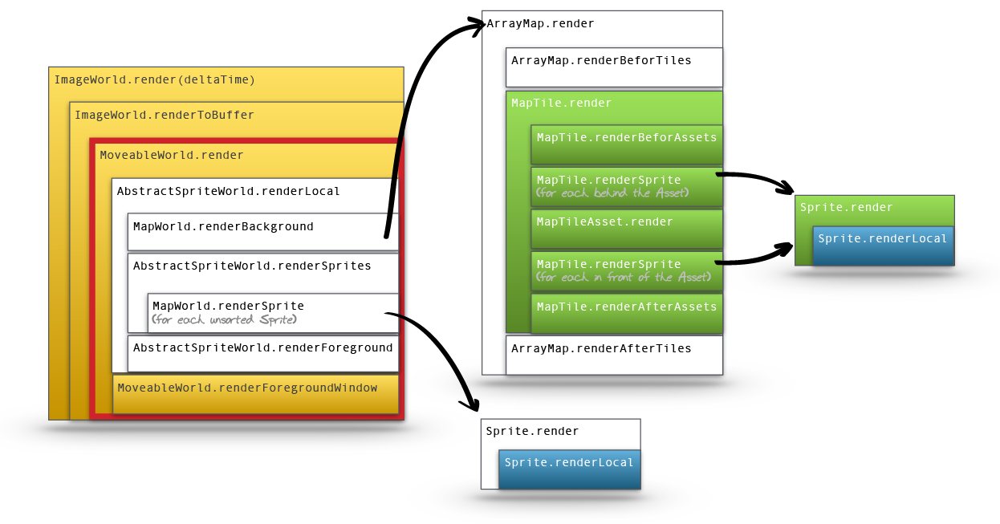
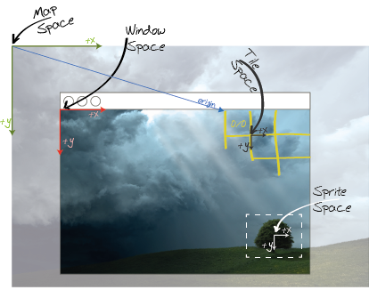
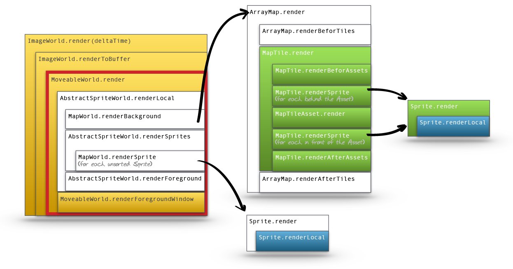

Package gdi.game.map
Class MapWorld
java.lang.Object
gdi.game.World
gdi.game.ImageWorld
gdi.game.MoveableWorld
gdi.game.sprite.AbstractSpriteWorld
gdi.game.map.MapWorld
public class MapWorld
extends gdi.game.sprite.AbstractSpriteWorld
A MapWord is an extension to the
The rendering in different aspects of the world is performed with graphics contexts in different coordinate spaces. The following image shows the respective spaces:

The following image shows how the render-tree is organized throughout the several world classe. It shows the coordinate space that is valid in each render call:

(Blue=Sprite Space, Green=Tile Space, White=Image or Map Space, Yellow=Window Space)
Note:The map-grid does not have to start in the origin of the image-space, but can be offset using
AbstractSpriteWorld that adds a regular grid of MapTiles into the world. The
Grid is represented by an instance of a sublcass to Map, while this class takes care of passing through
messages to that map and manages some basic map- (or tile-)related tasks.The rendering in different aspects of the world is performed with graphics contexts in different coordinate spaces. The following image shows the respective spaces:

The following image shows how the render-tree is organized throughout the several world classe. It shows the coordinate space that is valid in each render call:

(Blue=Sprite Space, Green=Tile Space, White=Image or Map Space, Yellow=Window Space)
Note:The map-grid does not have to start in the origin of the image-space, but can be offset using
Map.getOrigin(). If you offset the origin of a map, you should also consider to change the addonSize of the
world using setAddonSize(int, int) to compensate for the additional size requirement. If not, you may not be
able to drag the view-area to the right- or bottom-most edges of your map- Version:
- 1.0
- Author:
- frank
- See Also:
-
Constructor Summary
ConstructorsConstructorDescriptionMapWorld(int cols, int rows, int tileWidth, int tileHeight) Creates a new World with a regularGridMapas its map-overlay.MapWorld(int cols, int rows, int tileWidth, int tileHeight, int addonWidth, int addonHeight) Creates a new World with a regularGridMapas its map-overlay.Creates a new world with the Map you passed as the map-overlay.Creates a new world with the Map you passed as the map-overlay.MapWorld(gdi.game.Settings settings, int cols, int rows, int tileWidth, int tileHeight) Creates a new World with a regularGridMapas its map-overlay.MapWorld(gdi.game.Settings settings, int cols, int rows, int tileWidth, int tileHeight, boolean threaded) Creates a new World with a regularGridMapas its map-overlay.MapWorld(gdi.game.Settings settings, int cols, int rows, int tileWidth, int tileHeight, int addonWidth, int addonHeight) Creates a new World with a regularGridMapas its map-overlay.MapWorld(gdi.game.Settings settings, int cols, int rows, int tileWidth, int tileHeight, int addonWidth, int addonHeight, boolean threaded) Creates a new World with a regularGridMapas its map-overlay.Creates a new world with the Map you passed as the map-overlay.Creates a new world with the Map you passed as the map-overlay.Creates a new world with the Map you passed as the map-overlay.Creates a new world with the Map you passed as the map-overlay.Creates a new World with a regularGridMapas its map-overlay.MapWorld(String[] args, int cols, int rows, int tileWidth, int tileHeight, int addonWidth, int addonHeight) Creates a new World with a regularGridMapas its map-overlay.Creates a new world with the Map you passed as the map-overlay.Creates a new world with the Map you passed as the map-overlay. -
Method Summary
Modifier and TypeMethodDescriptionintReturns the size of the map (=size of the map +addonSize).
This method should return the height of the world.final MapTileReturns the tile the mouse is currently hovering above.final MapTileReturns the tile that was selected last.final MapgetMap()Returns the map that is overlaid on top of the world.intgetWidth()Returns the size of the world (=size of the map +addonSize).
This method should return the width of the world.final voidsetAddonSize(int width, int height) Changes to offset of the map-overlay relative to the map- (or image-)space.Methods inherited from class gdi.game.sprite.AbstractSpriteWorld
addSprite, containsSprite, iterator, moveAbove, moveBelow, removeSpriteMethods inherited from class gdi.game.MoveableWorld
centerDrawOffset, fitWindowSize, getDrawOffsetX, getDrawOffsetY, getOverlayManager, mapSpaceToWindow, removeInputEventDelegate, setInputEventDelegate, windowSpaceToMapMethods inherited from class gdi.game.ImageWorld
createCanvas, drawCanvas, drawCanvas, getActiveCanvas, getBackgroundImage, isAntiAliased, releaseCanvas, setAntiAlias, syncMethods inherited from class gdi.game.World
areUpdatesPaused, getRenderFPS, getSettings, getTime, getUpdateFPS, getWindow, increaseTime, isRunning, isRunningInThread, isSleepingInLoop, isTestMode, queueEvent, run, run, run, setNeedsDisplay, setRunsInThread, setSleepsInLoop, setTestLoops, setTitle, setUpdatesPaused, stopMethods inherited from class java.lang.Object
equals, getClass, hashCode, notify, notifyAll, toString, wait, wait, waitMethods inherited from interface java.lang.Iterable
forEach, spliterator
-
Constructor Details
-
MapWorld
public MapWorld(int cols, int rows, int tileWidth, int tileHeight) Creates a new World with a regularGridMapas its map-overlay. The instance is automatically created and is accessible usinggetMap().- Parameters:
cols- The number of columns the map should haverows- The number of rows the map should havetileWidth- The width of a single tiletileHeight- The height of a single tile- See Also:
-
GridMap
-
MapWorld
public MapWorld(int cols, int rows, int tileWidth, int tileHeight, int addonWidth, int addonHeight) Creates a new World with a regularGridMapas its map-overlay. The instance is automatically created and is accessible usinggetMap().- Parameters:
cols- The number of columns the map should haverows- The number of rows the map should havetileWidth- The width of a single tiletileHeight- The height of a single tileaddonWidth- The additional width that is added to the width of the map when calculating the size of the worldaddonHeight- The additional height that is added to the height of the map when calculating the size of the world- See Also:
-
GridMap
-
MapWorld
Creates a new world with the Map you passed as the map-overlay.- Parameters:
map- The map that is overlaid on top of the world
-
MapWorld
Creates a new world with the Map you passed as the map-overlay.- Parameters:
map- The map that is overlaid on top of the worldaddonWidth- The additional width that is added to the width of the map when calculating the size of the worldaddonHeight- The additional height that is added to the height of the map when calculating the size of the world
-
MapWorld
Creates a new World with a regularGridMapas its map-overlay. The instance is automatically created and is accessible usinggetMap().- Parameters:
args- The commandline arguments passed to the main-Function. This value can benull. The passed values are used to determine theSettingsfor this world.cols- The number of columns the map should haverows- The number of rows the map should havetileWidth- The width of a single tiletileHeight- The height of a single tile- See Also:
-
GridMap
-
MapWorld
public MapWorld(String[] args, int cols, int rows, int tileWidth, int tileHeight, int addonWidth, int addonHeight) Creates a new World with a regularGridMapas its map-overlay. The instance is automatically created and is accessible usinggetMap().- Parameters:
args- The commandline arguments passed to the main-Function. This value can benull. The passed values are used to determine theSettingsfor this world.cols- The number of columns the map should haverows- The number of rows the map should havetileWidth- The width of a single tiletileHeight- The height of a single tileaddonWidth- The additional width that is added to the width of the map when calculating the size of the worldaddonHeight- The additional height that is added to the height of the map when calculating the size of the world- See Also:
-
GridMap
-
MapWorld
Creates a new world with the Map you passed as the map-overlay.- Parameters:
args- The commandline arguments passed to the main-Function. This value can benull. The passed values are used to determine theSettingsfor this world.map- The map that is overlaid on top of the world
-
MapWorld
Creates a new world with the Map you passed as the map-overlay.- Parameters:
args- The commandline arguments passed to the main-Function. This value can benull. The passed values are used to determine theSettingsfor this world.map- The map that is overlaid on top of the worldaddonWidth- The additional width that is added to the width of the map when calculating the size of the worldaddonHeight- The additional height that is added to the height of the map when calculating the size of the world
-
MapWorld
public MapWorld(gdi.game.Settings settings, int cols, int rows, int tileWidth, int tileHeight) Creates a new World with a regularGridMapas its map-overlay. The instance is automatically created and is accessible usinggetMap().- Parameters:
settings- the world settings you want to usecols- The number of columns the map should haverows- The number of rows the map should havetileWidth- The width of a single tiletileHeight- The height of a single tile- See Also:
-
GridMap
-
MapWorld
public MapWorld(gdi.game.Settings settings, int cols, int rows, int tileWidth, int tileHeight, int addonWidth, int addonHeight) Creates a new World with a regularGridMapas its map-overlay. The instance is automatically created and is accessible usinggetMap().- Parameters:
settings- the world settings you want to usecols- The number of columns the map should haverows- The number of rows the map should havetileWidth- The width of a single tiletileHeight- The height of a single tileaddonWidth- The additional width that is added to the width of the map when calculating the size of the worldaddonHeight- The additional height that is added to the height of the map when calculating the size of the world- See Also:
-
GridMap
-
MapWorld
Creates a new world with the Map you passed as the map-overlay.- Parameters:
settings- the world settings you want to usemap- The map that is overlaid on top of the world
-
MapWorld
Creates a new world with the Map you passed as the map-overlay.- Parameters:
settings- the world settings you want to usemap- The map that is overlaid on top of the worldaddonWidth- The additional width that is added to the width of the map when calculating the size of the worldaddonHeight- The additional height that is added to the height of the map when calculating the size of the world
-
MapWorld
public MapWorld(gdi.game.Settings settings, int cols, int rows, int tileWidth, int tileHeight, boolean threaded) Creates a new World with a regularGridMapas its map-overlay. The instance is automatically created and is accessible usinggetMap().- Parameters:
settings- the world settings you want to usecols- The number of columns the map should haverows- The number of rows the map should havetileWidth- The width of a single tiletileHeight- The height of a single tilethreaded- true if the game-loop should run in its own thread- See Also:
-
GridMap
-
MapWorld
public MapWorld(gdi.game.Settings settings, int cols, int rows, int tileWidth, int tileHeight, int addonWidth, int addonHeight, boolean threaded) Creates a new World with a regularGridMapas its map-overlay. The instance is automatically created and is accessible usinggetMap().- Parameters:
settings- the world settings you want to usecols- The number of columns the map should haverows- The number of rows the map should havetileWidth- The width of a single tiletileHeight- The height of a single tileaddonWidth- The additional width that is added to the width of the map when calculating the size of the worldaddonHeight- The additional height that is added to the height of the map when calculating the size of the worldthreaded- true if the game-loop should run in its own thread- See Also:
-
GridMap
-
MapWorld
Creates a new world with the Map you passed as the map-overlay.- Parameters:
settings- the world settings you want to usemap- The map that is overlaid on top of the worldthreaded- true if the game-loop should run in its own thread
-
MapWorld
public MapWorld(gdi.game.Settings settings, Map map, int addonWidth, int addonHeight, boolean threaded) Creates a new world with the Map you passed as the map-overlay.- Parameters:
settings- the world settings you want to usemap- The map that is overlaid on top of the worldaddonWidth- The additional width that is added to the width of the map when calculating the size of the worldaddonHeight- The additional height that is added to the height of the map when calculating the size of the worldthreaded- true if the game-loop should run in its own thread
-
-
Method Details
-
setAddonSize
public final void setAddonSize(int width, int height) Changes to offset of the map-overlay relative to the map- (or image-)space.- Parameters:
width- The additional width that is added to the width of the map when calculating the size of the worldheight- The additional height that is added to the height of the map when calculating the size of the world
-
getMap
Returns the map that is overlaid on top of the world.- Returns:
- The map that is associated with this world.
-
getHoveredTile
Returns the tile the mouse is currently hovering above. This class keeps track of the mouse position to simplify the interaction with map-tiles and thus keeps track of the hover and selection state of individual tiles.
Note: There is only one single hovered tile on the map at any one time- Returns:
nullor theMapTilewhere the mouse is currently hovering above.
-
getLastSelectedTile
Returns the tile that was selected last. This class keeps track of the mouse position to simplify the interaction with map-tiles and thus keeps track of the hover and selection state of individual tiles.
Note: There may be more than one selected tile in a map- Returns:
nullor theMapTilethat was last selected.
-
getWidth
public int getWidth()Returns the size of the world (=size of the map +addonSize).
This method should return the width of the world. This represents the maximum drawable width. This is not the width of the window that displays this world and usually does not correspond to the width of the background image! It is a virtual size describing the maximum size of the content you want to display.- Specified by:
getWidthin classgdi.game.MoveableWorld- Returns:
- The width of the world
- See Also:
-
getHeight
public int getHeight()Returns the size of the map (=size of the map +addonSize).
This method should return the height of the world. This represents the maximum drawable height. This is not the height of the window that displays this world and usually does not correspond to the height of the background image! It is a virtual size describing the maximum size of the content you want to display.- Specified by:
getHeightin classgdi.game.MoveableWorld- Returns:
- The height of the world
- See Also:
-